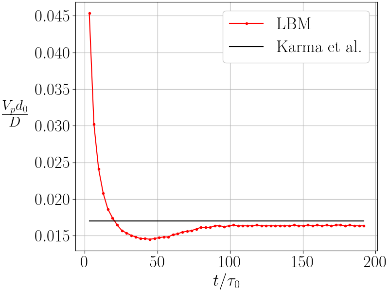

Implementation of a crystal growth model
Objective of this 3rd tutorial
The starting point is the kernel ACT of the second tutorial. That kernel will be modified here in order to simulate the growth of one crystal.
Mathematical model
The mathematical model is composed of one dimensionless temperature equation which writes:
The phase-field equation is slightly more complex than the previous one in the 2nd tutorial:
where the anisotropy function writes:
and the vector \(\boldsymbol{\mathcal{N}}\) by
Objective
Until now, only the standard BGK collider was used in our implementation. In this tutorial, we will see how to
use another LBM_Saclay collider, based on BGK (but modified) to take into account the \(\tau_{0}{\color{red}a_{s}^{2}(\boldsymbol{n})}\) in front of the partial derivative \(\partial \psi/\partial t\).
modify the
setup_colliderfor \(\boldsymbol{\nabla}\cdot{\color{blue}\boldsymbol{\mathcal{N}}(\boldsymbol{n})}\)
1. Use a new collision operator for the phase-field equation in your kernel
Several collision operators are already implemented in Collision_operators.h. The most popular are BGK, TRT and MRT. Here we will use a BGK operator, slightly modified and involving a non-local term. It is mainly used to take into account a time-evolving factor in front the partial derivative in time. In LBM_Saclay, that operator is called BGKColliderTimeFactor.
Function update_f()
For BGK the update is currently
if (params.collisionType2 == BGK) { update1eq<EquationTag2, BGKCollider<dim, npop>>();
Modify it for
BGKColliderTimeFactor
Solution
if (params.collisionType2 == BGK) { //update1eq<EquationTag2, BGKCollider<dim, npop>>(); update1eq<EquationTag2, BGKColliderTimeFactor<dim,npop>>();
struct LBMScheme
Currently only two collisions are defined
using BGK_Collider = BGKCollider<dim, npop>; using MRT_Collider = MRTCollider<dim, npop>;
Define a new collision
Solution
using BGK_Collider = BGKCollider<dim, npop>; using MRT_Collider = MRTCollider<dim, npop>; using BGK_Collider_Time_Factor = BGKColliderTimeFactor<dim,npop>;
Add a new empty function setup_collider for EquationTag2 with BGK_Collider_Time_Factor
Solution
// ================================================================================================== // // BGK modified for phase-field equation of crystal growth // // ================================================================================================== KOKKOS_INLINE_FUNCTION void setup_collider(EquationTag2 tag, const IVect<dim>& IJK, BGK_Collider_Time_Factor& collider) const { }
2. Modifications inside each file for implementing a crystal growth model
Declaration of new fields
From the previous tutorialn, in enum ComponentIndex, the indices for macroscopic fields are:
enum ComponentIndex { IU , /*!< X velocity / momentum index */ IV , /*!< Y velocity / momentum index */ IW , /*!< Z velocity / momentum index */ ITEMP , /*!< Temperature index */ IPHI , /*!< Phase field index */ IDPHIDT, COMPONENT_SIZE /*!< invalid index, just counting number of fields */ };
Add for components of gradient of \(\phi\)
Solution
enum ComponentIndex { IU , /*!< X velocity / momentum index */ IV , /*!< Y velocity / momentum index */ IW , /*!< Z velocity / momentum index */ ITEMP , /*!< Temperature index */ IPHI , /*!< Phase field index */ IDPHIDT, IDPHIDX, IDPHIDY, COMPONENT_SIZE /*!< invalid index, just counting number of fields */ };
Read and declare all parameters in ModelParams
The Allen-Cahn equation involves three parameters: the interface thickness \(W\) and the mobility \(M_\phi\) and the interface temperature \(\theta_I\).
Read and declare Allen-Cahn parameters in
ModelParams
Solution
KR_W0 = configMap.getFloat("params","KR_W0",1.0); KR_tau0 = configMap.getFloat("params","KR_tau0",1.0); KR_lambda0 = configMap.getFloat("params","KR_lambda0",1.0); KR_eps = configMap.getFloat("params","KR_eps",1.0);Don’t forget to declare them as
real_tat the end ofModelParamsreal_t KR_W0, KR_tau0, KR_lambda0, KR_eps;
Add condition for initial condition
Currently only one condition exits for intial condition:
if (initTypeStr == "gaussian") initType = ADE_GAUSSIAN; else if (initTypeStr == "vertical") initType = PHASE_FIELD_INIT_VERTICAL;
Add the necessary condition for one initialization
Solution
if (initTypeStr == "gaussian") initType = ADE_GAUSSIAN; else if (initTypeStr == "vertical") initType = PHASE_FIELD_INIT_VERTICAL; else if (initTypeStr == "sphere") initType = PHASE_FIELD_INIT_SPHERE;
Add specific functions for temperature equation
Modify function
Source_TEMPwith factor 1/2 (be careful with the positive sign)
Solution
Source_TEMP// ======================================================= // Source term for temperature equation KOKKOS_INLINE_FUNCTION real_t Source_TEMP(EquationTag1 tag, const LBMState& lbmState) const { real_t dphidt = lbmState[IDPHIDT]; return 0.5*dphidt; }
Add specific functions of crystal growth functions in the phase-field equation
Add another source term
Solution
psi_st// ======================================================= // Source term for crystal growth KOKKOS_INLINE_FUNCTION real_t psi_st(EquationTag2 tag, const LBMState& lbmState) const { real_t phi = lbmState[IPHI]; real_t S = (phi - KR_lambda0*(lbmState[ITEMP])*(1-phi*phi))*(1-phi*phi)/KR_tau0; return S; }
Add a new function
tau_PHI_Crystalfor collision rate using the anaisotropy function \(a_s()\boldsymbol{n}\)
Solution
tau_PHI_Crystal// ======================================================= // relaxation coef for LBM scheme of phase field equation KOKKOS_INLINE_FUNCTION real_t tau_PHI_Crystal(EquationTag2 tag, const LBMState& lbmState, real_t As2) const { real_t tau = 0.5 + (3.0 * As2 * ((KR_W0*KR_W0)/KR_tau0) * dt / (dx * dx)); return (tau); }
Add a new hyperbolic tangent function
phi1for initial condition
Solution
phi1// Hyperbolic tangent for g3 double-well KOKKOS_INLINE_FUNCTION real_t phi1(real_t x) const { return (tanh(sign * 2.0 * x / KR_W0 )); }
Add a new function
compute_anisotropyfor computing the anisotropy function \(a_s(\boldsymbol{n})\)
Solution
compute_anisotropyKOKKOS_INLINE_FUNCTION real_t compute_anisotropy(EquationTag2 tag, const LBMState& lbmState) const { const real_t norm = sqrt( SQR(lbmState[IDPHIDX]) + SQR(lbmState[IDPHIDY])); real_t As_n; if(norm > 0.0){ real_t xx4 = SQR(lbmState[IDPHIDX])*SQR(lbmState[IDPHIDX]); real_t yy4 = SQR(lbmState[IDPHIDY])*SQR(lbmState[IDPHIDY]); real_t ww4 = SQR(norm)*SQR(norm); As_n = 1.0 - 3.0*KR_eps + 4.0*KR_eps*(xx4+yy4)/ww4;} else { As_n = 1.0 - 3.0*KR_eps;} return As_n; }
Add a new function
compute_anisotropy_vector
Solution
compute_anisotropy_vectorKOKKOS_INLINE_FUNCTION RVect2 compute_anisotropy_vector(EquationTag2 tag, const LBMState& lbmState) const { const real_t norm = sqrt( SQR(lbmState[IDPHIDX]) + SQR(lbmState[IDPHIDY]))+NORMAL_EPSILON; real_t xx = lbmState[IDPHIDX]; real_t yy = lbmState[IDPHIDY]; real_t xx4 = xx*xx*xx*xx; real_t yy4 = yy*yy*yy*yy; real_t ww4 = SQR(norm)*SQR(norm); real_t ww6 = ww4*SQR(norm); real_t As_n = 1.0 - 3.0*KR_eps + 4.0*KR_eps*(xx4+yy4)/ww4; RVect2 N; N[IX] = -16.0*KR_eps*xx*(yy4-SQR(xx)*SQR(yy))/ww6; N[IY] = -16.0*KR_eps*yy*(xx4-SQR(yy)*SQR(xx))/ww6; N[IX] *= norm*norm*As_n; N[IY] *= norm*norm*As_n; return N; }
Write a new function setup_collider with BGK_Collider_Time_Factor
Fill the new setup_collider for phase-field equation
Solution
Define local variables
KOKKOS_INLINE_FUNCTION void setup_collider(EquationTag2 tag, const IVect<dim>& IJK, BGK_Collider_Time_Factor& collider) const { const real_t dt = Model.dt; const real_t dx = Model.dx; const real_t e2 = Model.e2; const real_t cs2 = 1.0/e2 * SQR(dx/dt); const real_t W0 = Model.KR_W0; const real_t tau0 = Model.KR_tau0; const real_t fact = W0*W0/tau0; LBMState lbmState; Base::template setupLBMState2<LBMState,COMPONENT_SIZE>(IJK, lbmState); bool can_str ;
Compute moments and source term
const real_t M0 = Model.M0_PHI(tag, lbmState); const real_t As_n = Model.compute_anisotropy(tag, lbmState); real_t As2 = As_n*As_n; const RVect2 N = Model.compute_anisotropy_vector(tag, lbmState); const real_t psi_st = Model.psi_st(tag, lbmState);
Check neighbors for non-local term of collision
IVect<dim> IJKs; can_str = this->stream_alldir(IJK,IJKs,0); if (can_str) {collider.f_nonlocal[0] = this->get_f_val(tag,IJKs,0);} else {collider.f_nonlocal[0] = 0.0;}
Define all necessary inputs for collision
// compute collision rate collider.tau = Model.tau_PHI_Crystal (tag, lbmState, As2); // ipop = 0 collider.f[0] = Base::get_f_val(tag,IJK,0); collider.S0[0] = w[0]*dt*psi_st; collider.feq[0] = w[0]*(M0-e2*Base::compute_scal(0,N)*(dt/dx)*fact); collider.factor = As2; // ipop > 0 for (int ipop=1; ipop<npop; ++ipop) { collider.f[ipop] = this->get_f_val(tag,IJK,ipop); collider.S0[ipop] = dt*w[ipop]*psi_st; collider.feq[ipop] = w[ipop]*(M0-e2*Base::compute_scal(ipop,N)*(dt/dx)*W0*W0/tau0); can_str = this->stream_alldir(IJK,IJKs,ipop); if (can_str) {collider.f_nonlocal[ipop] = this->get_f_val(tag,IJKs,ipop);} else {collider.f_nonlocal[ipop] = 0.0;} } } // end of setup_collider for phase field equation //==================================================================
Function init_macro
After the initialization for ADE_GAUSSIAN:
if (Model.initType == ADE_GAUSSIAN) { c = Model.ampl * exp( - ( SQR(x-Model.x0) / (2 * SQR(Model.sigmax)) + SQR(y-Model.y0) / (2 * SQR(Model.sigmay)) )) ; vx = Model.initVX; vy = Model.initVY; } else if (Model.initType == PHASE_FIELD_INIT_VERTICAL) { xphi = x - Model.x0; c = Model.undercooling ; } real_t phi = Model.phi0(xphi);
Write an initial condition corresponding to keywords
PHASE_FIELD_INIT_SPHERE
Solution for a circle
else if (Model.initType == PHASE_FIELD_INIT_SPHERE){ xphi = (Model.r0 - sqrt( SQR(x-Model.x0) + SQR(y-Model.y0)) ); c = Model.undercooling ; } //real_t phi = Model.phi0(xphi); real_t psi = Model.phi1(xphi);
Save in appropriate arrays
Solution
this->set_lbm_val(IJK, ITEMP, c ); this->set_lbm_val(IJK, IU , vx); this->set_lbm_val(IJK, IV , vy); //this->set_lbm_val(IJK,IPHI,phi); this->set_lbm_val(IJK,IPHI,psi);
Function update_macro_grad
That function is currently empty
KOKKOS_INLINE_FUNCTION void update_macro_grad(IVect<dim> IJK) const { }
Add the computation of gradient
Solution
KOKKOS_INLINE_FUNCTION void update_macro_grad(IVect<dim> IJK) const { RVect<dim> gradPhi; this->compute_gradient(gradPhi, IJK, IPHI, BOUNDARY_EQUATION_1); this->set_lbm_val(IJK,IDPHIDX,gradPhi[IX]); this->set_lbm_val(IJK,IDPHIDY,gradPhi[IY]); }
Add the keywords of initial conditions
In file InitConditionsTypes.h, two keywords are currently declared:
enum InitCondition{ PHASE_FIELD_INIT_UNDEFINED, ADE_GAUSSIAN, PHASE_FIELD_INIT_VERTICAL };
Simply add after PHASE_FIELD_INIT_VERTICAL the new keyword for Allen-Cahn: PHASE_FIELD_INIT_SPHERE.
Solution
enum InitCondition{ PHASE_FIELD_INIT_UNDEFINED, ADE_GAUSSIAN, PHASE_FIELD_INIT_VERTICAL, PHASE_FIELD_INIT_SPHERE };
3. Verifications of your implementation
Run and post-process your results
An input file Crystal-Equiaxe.ini is given in the folder Tutorial03_Crystal-Growth.
Run LBM_Saclay with that input file
Post-process your
.vtioutputs with the pvpython input fileVideo-plus-Contour.pvpyfor paraview 5.11
$ /tmp_formation/LBM_Saclay/ParaView/ParaView-5.11.0-MPI-Linux-Python3.9-x86_64/bin/pvpython Video-plus-Contour.pvpyThe outputs are several
.csvfiles plus one video (.aviformat).
Run the video generated by the post-processing
$ vlc Vid-Crystal-Growth_Equiaxe.avi
Video: simulation of 2D crystal growth
Compare the evolution of velocity tip with the steady reference.
$ python tip_velocity_contour.pyYou must obtain Fig. Fig. 47

Fig. 47 Comparison between LBM and reference solution of Karma-Rappel
{kind=link}
Section author: Alain Cartalade & Capucine Méjanès